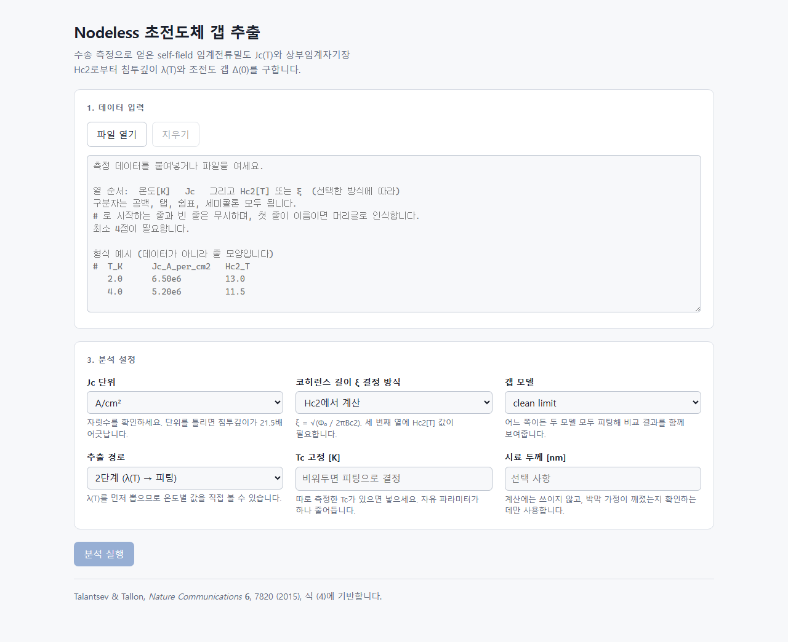
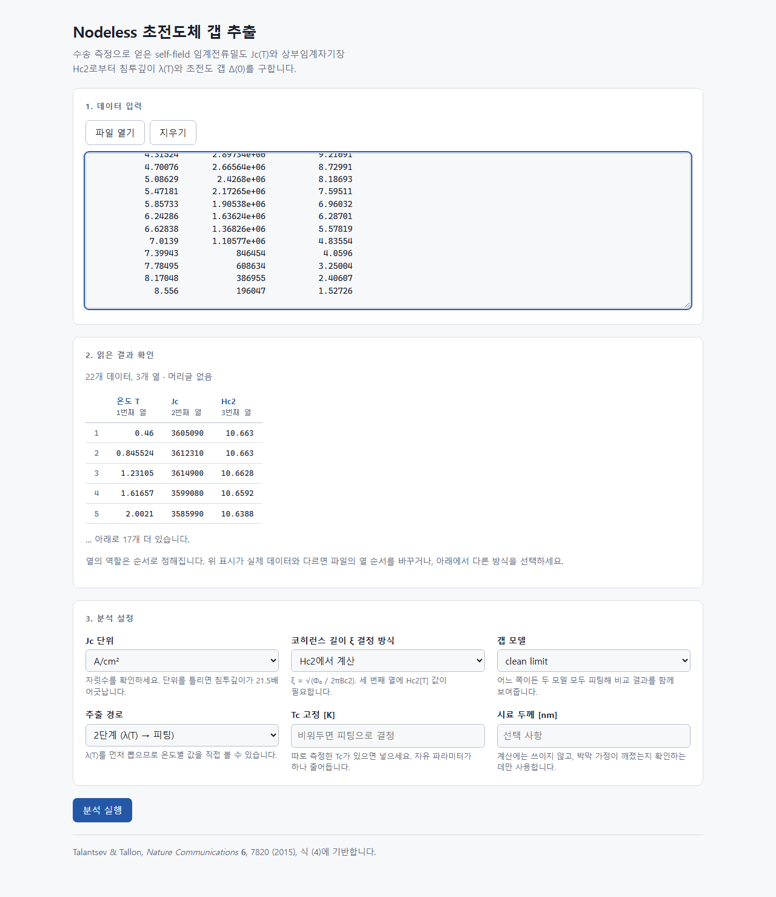
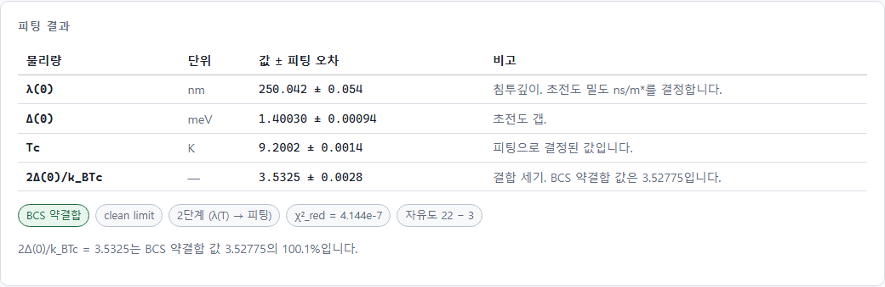
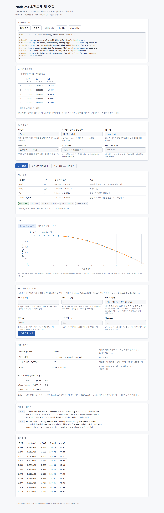
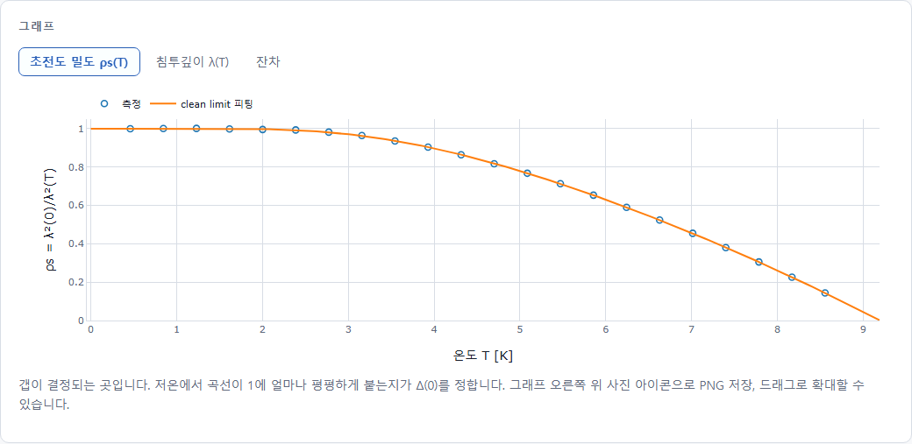
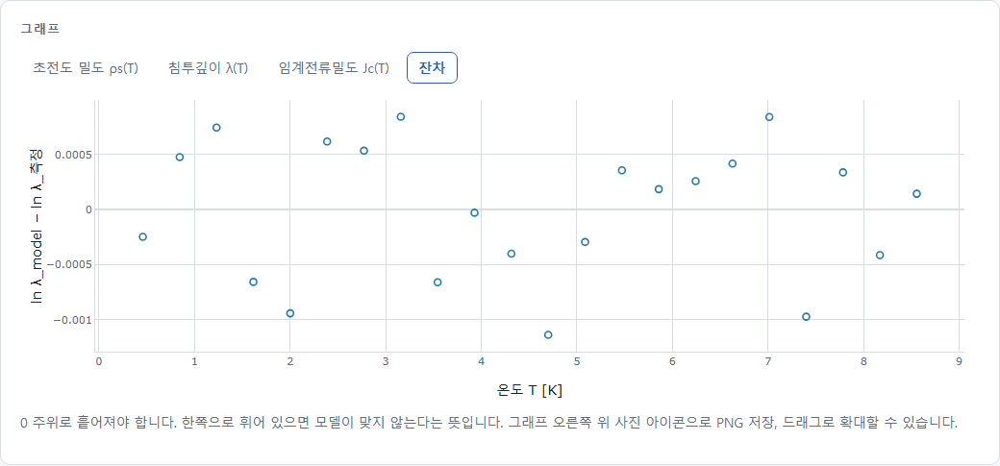
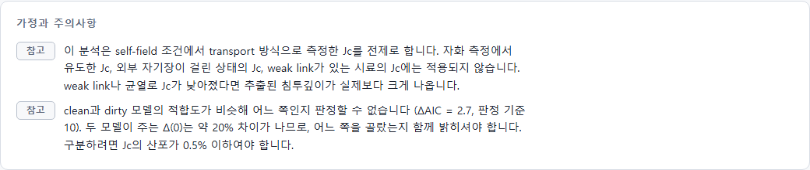
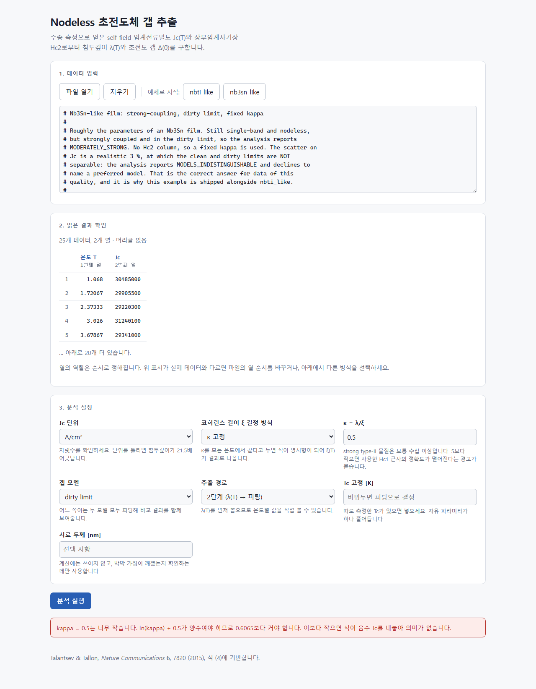

Section 00이 문서에 대하여
2026년 8월 22일과 23일 이틀 동안, 초전도 박막의 자기장 없는 상태에서 측정한
임계전류밀도 Jc(T)로부터 런던 침투깊이 λ(0)와 초전도
에너지 갭 Δ(0)를 뽑아내는 웹 애플리케이션 하나를 만들었습니다.
그 자체도 결과물이지만, 이 문서가 다루는 것은 만드는 방법입니다. 같은 자리에서 다시 시작하는 사람이 이 문서만 보고 처음부터 끝까지 따라올 수 있도록, 설치할 프로그램 목록부터 최종 화면의 스크린샷까지 전부 적었습니다.
이 프로그램이 하는 일 — 한 줄로
초전도체 연구에는 측정 비용의 비대칭이라는 것이 있습니다.
Jc와 상부임계자기장 Hc2는 4단자 수송 측정으로 하루면
얻습니다. 반면 침투깊이 λ를 재려면 뮤온 스핀 회전(μSR)이나
터널 다이오드 공진기가 필요하고, 갭 Δ를 재려면 터널링 분광이나
ARPES가 필요합니다. 박막 이론이 이 둘을 연결해 주므로, 싼 측정에서
비싼 물리량을 계산할 수 있습니다.
근거는 E. F. Talantsev & J. L. Tallon, Universal self-field critical current for thin-film superconductors, Nature Communications 6, 7820 (2015)의 식 (4)입니다.
읽는 법
- 회색 상자 안의 글씨는 터미널에 그대로 입력하는 명령입니다. 앞의
#이나 회색 글씨는 설명이므로 입력하지 않습니다. 이런 글씨는 파일 이름, 폴더 이름, 명령어, 변수 이름입니다.- 파란 상자는 개념 설명, 구리색 상자는 주의·함정, 초록 상자는 확인 방법입니다.
- 모든 명령은 Windows 11 + PowerShell 기준입니다. macOS나 Linux에서는 경로 구분자가
\가 아니라/이고, 가상환경 활성화 경로가 다릅니다.
확인한 것과 확인하지 못한 것을 구분해서 씁니다. 예를 들어 Docker 이미지는 단 한 번도 빌드된 적이 없습니다 — 이 컴퓨터에 Docker가 설치되어 있지 않기 때문입니다. 그 사실을 감추지 않고, 무엇을 대신 확인했는지 Phase 7에 적었습니다. 검증되지 않은 것을 검증된 것처럼 적는 문서는 나중에 반드시 사고를 냅니다.
Section 01전체 지도
자세한 이야기로 들어가기 전에, 전체가 어떤 모양인지 한 번 봐 두면 길을 잃지 않습니다. 크게 세 덩어리입니다.
| 단계 | 하는 일 | 끝나면 손에 남는 것 |
|---|---|---|
| 준비 | 도구 6가지를 설치하고 계정을 연결 | 터미널에서 claude를 치면 AI가 대답하는 상태 |
| 설계 | 코드를 한 줄도 쓰지 않고 문서 7종을 먼저 작성 | “무엇을 왜 만드는가”가 글로 고정된 상태. 여기서 이미 물리 오류 2개를 잡았습니다 |
| 제작 | Phase 1부터 8까지, 각 단계마다 통과 조건(gate)을 걸고 순서대로 | 테스트 193개가 통과하는, 브라우저에서 도는 프로그램 |
보통은 “일단 코드부터 짜 보고 되는지 본다”가 자연스럽게 느껴집니다. AI 에이전트와 일할 때 그게 특히 위험한 이유는, AI가 모호한 지시를 거절하지 않고 그럴듯하게 채워 넣기 때문입니다. 무엇을 만들지 글로 고정해 두지 않으면, 매 대화마다 조금씩 다른 물건이 만들어지고, 어느 쪽이 맞는지 판단할 기준이 아무 데도 없게 됩니다.
사양을 먼저 쓰는 것은 AI를 통제하기 위한 장치이면서, 동시에 사람이 자기 생각을 검사하는 장치이기도 합니다. 이 프로젝트에서는 코드가 한 줄도 없던 Phase 0에서 이미 BCS 상수 불일치와 clean/dirty 곡선 교차라는 물리 문제 두 개가 드러났습니다.
Section 02준비물 — 무엇을 왜 설치하는가
2.1 왜 도구가 여러 개 필요한가
실험실에 비유하면 이해가 빠릅니다. 측정 하나를 하려고 해도 크라이오스탯, 전원, 나노볼트미터, 데이터 수집 PC가 각각 필요하지 한 상자로 끝나지 않습니다. 소프트웨어도 같습니다. 아래 도구들은 각각 다른 일을 합니다.
| 도구 | 역할 — 실험실 비유 | 이 컴퓨터의 버전 |
|---|---|---|
| Git | 실험 노트. 모든 변경을 되돌릴 수 있게 기록합니다 | 2.55.0 |
| Python | 계산을 실제로 수행하는 언어. 백엔드(계산 서버)가 이걸로 돌아갑니다 | 3.12.10 |
| Node.js | 웹 화면을 만드는 도구 모음. 브라우저가 아니라 화면을 조립하는 공장입니다 | 24.19.0 |
| nvm-windows | Node.js의 버전을 여러 개 깔아 두고 골라 쓰게 해 주는 관리자 | — |
| Claude Code | AI 코딩 에이전트. 실제로 코드를 쓰고 테스트를 돌리는 상대 | 2.1.241 |
| Orca | Claude Code를 여러 개 띄워 놓고 관리하는 데스크톱 앱 | 설치됨 |
| Docker Desktop | 완성품을 어디서든 똑같이 돌아가게 포장하는 도구 | 미설치 |
2.2 하나씩 설치하기
① Git — 버전 관리
Git은 “파일을 저장할 때마다 스냅샷을 찍어 두는 프로그램”이라고 생각하면 됩니다. 어제 잘 되던 게 오늘 안 되면 어제 상태로 정확히 되돌릴 수 있고, 무엇이 언제 왜 바뀌었는지가 전부 남습니다. AI와 일할 때는 이게 특히 중요합니다. AI가 파일 20개를 한 번에 고쳤을 때, Git이 없으면 무엇이 바뀌었는지 알 방법이 없습니다.
# https://git-scm.com/download/win 에서 설치 프로그램 내려받아 실행
# 설치 옵션은 전부 기본값으로 두어도 됩니다.
# 설치 후 확인 — 버전이 찍히면 성공
git --version
# 최초 1회, 커밋에 남을 이름과 메일 설정
git config --global user.name "ktkim"
git config --global user.email "kgtakee@gmail.com"② Python — 계산 엔진
물리 계산과 서버가 Python으로 되어 있습니다. 이 프로젝트는 3.11 이상을 요구하고, 이 컴퓨터에는 3.12.10이 깔려 있습니다.
# https://www.python.org/downloads/windows/ 에서 설치
# ★ 설치 첫 화면의 "Add python.exe to PATH" 체크박스를 반드시 켜세요.
# 이걸 놓치면 터미널에서 python 명령을 못 찾습니다.
python --version③ nvm-windows + Node.js — 화면 만드는 공장
Node.js는 웹 화면(React)을 만들고 빌드하는 데 쓰입니다. 버전이 바뀌면
빌드가 깨지는 일이 흔해서, 버전 관리자인 nvm으로 깔아 두고 프로젝트마다
버전을 고정하는 것이 표준입니다. 이 프로젝트는 frontend/.nvmrc에
24.19.0을 적어 두었습니다.
# https://github.com/coreybutler/nvm-windows/releases 에서 nvm-setup.exe
nvm install 24.19.0
nvm use 24.19.0
node --version # v24.19.0
npm --version # 11.17.0
Node를 깔면 같이 들어오는 패키지 관리자입니다. 남이 만들어 둔 코드
묶음(라이브러리)을 내려받아 프로젝트에 붙입니다. npm install은
“이 프로젝트가 필요하다고 적어 둔 라이브러리를 전부 내려받아라”라는 뜻이고,
결과물은 node_modules 폴더에 수만 개의 파일로 쌓입니다.
이 폴더는 Git에 넣지 않습니다 — 언제든 다시 만들 수 있으니까요.
④ Claude Code — AI 코딩 에이전트
채팅창에 질문하는 AI와는 다릅니다. Claude Code는 터미널에서 돌면서 실제로 파일을 읽고, 고치고, 명령을 실행하고, 테스트를 돌려 보고, 실패하면 스스로 고치는 프로그램입니다. 이 프로젝트의 코드는 사실상 전부 Claude Code가 썼고, 사람은 무엇을 왜 만들지 정하고 결과를 판정했습니다.
# 방법 1 — npm으로 (Node가 이미 있으므로 가장 간단)
npm install -g @anthropic-ai/claude-code
# 확인
claude --version # 2.1.241 (Claude Code)
# 프로젝트 폴더로 이동한 뒤 실행
cd C:\Users\kgtak\projects\nodeless-sc-gap
claude처음 실행하면 브라우저가 열리면서 Anthropic 계정 로그인을 요구합니다. Claude Pro/Max 구독 또는 API 크레딧이 있어야 합니다. 로그인은 최초 1회이고, 이후에는 바로 대화가 시작됩니다.
⑤ Orca — 에이전트 여러 개를 관리하는 창
자세한 내용은 Section 03에 따로 적었습니다. 결론부터 말하면 없어도 됩니다. Claude Code만으로 이 프로젝트 전체를 만들 수 있습니다. Orca는 그 위에 얹는 편의 도구입니다.
⑥ Docker Desktop — 포장 도구 (이 프로젝트에서는 미설치)
Docker는 프로그램과 그것이 필요로 하는 모든 것(Python 버전, 라이브러리, 설정)을 한 상자에 넣어서, 다른 컴퓨터에서도 똑같이 돌아가게 만드는 도구입니다. “제 컴퓨터에서는 되는데요”라는 문제를 없애는 물건입니다.
이 프로젝트에는 Dockerfile과 docker-compose.yml이
완성되어 있지만, 이미지는 한 번도 빌드된 적이 없습니다.
Docker Desktop 설치에 관리자 권한이 필요한데 이 컴퓨터에서는 그것을
쓸 수 없었기 때문입니다. Docker를 깔았다면 다음 한 줄로 확인하십시오.
docker compose up --build # 그 뒤 http://localhost:8000선택 사항
- Visual Studio Code — 코드를 눈으로 보고 싶을 때. Claude Code가 전부 처리하므로 필수는 아니지만, 파일 구조를 훑어보기에 편합니다.
- Obsidian — 마크다운 문서를 읽는 프로그램. SDD 문서 7종이 전부 마크다운이라, 링크를 따라가며 읽기에 좋습니다. 이 프로젝트 폴더에도 Obsidian 설정이 남아 있습니다.
2.3 프로젝트를 놓을 자리 — 실제로 사고가 난 부분
프로젝트 폴더 경로는 다음 세 조건을 지켜야 합니다.
- 한글이 없을 것. 경로에 한글이 들어가면 일부 도구가 인코딩을 잘못 읽어 파일을 못 찾습니다.
- 공백이 없을 것. 공백은 명령줄에서 인자 구분자라, 따옴표를 빠뜨린 스크립트가 조용히 오작동합니다.
- OneDrive·Dropbox 같은 동기화 폴더 밖일 것. 동기화 클라이언트가 파일을 잡고 있으면 빌드가 간헐적으로 실패하고, 원인을 찾기가 매우 어렵습니다.
이 프로젝트는 처음에
C:\Users\kgtak\OneDrive\바탕 화면\개인 폴더\Program\Nodeless SC_Jc cal
에 있었고, 세 조건을 전부 어기고 있었습니다. 그래서
C:\Users\kgtak\projects\nodeless-sc-gap 으로 옮겼습니다.
이사할 때 알아 둘 것:
.venv(Python 가상환경)와node_modules는 복사하지 말고 새로 만듭니다. 내부에 원래 경로가 절대경로로 박혀 있어서, 옮기면 깨집니다.- OneDrive 밖으로 나오면 자동 백업이 사라집니다. 대체 수단은 Git 원격 저장소(GitHub 등)입니다. 이 프로젝트는 아직 원격을 설정하지 않았습니다.
# 새 위치에서 환경 다시 만들기 — 최초 1회
cd C:\Users\kgtak\projects\nodeless-sc-gap\backend
python -m venv .venv
.\.venv\Scripts\python.exe -m pip install -e ".[dev]"
cd ..\frontend
nvm use # .nvmrc를 읽어 24.19.0으로 전환
npm install
npx playwright install chromium
Python 라이브러리를 컴퓨터 전체가 아니라 이 프로젝트 폴더 안에만
설치하는 격리 공간입니다. 프로젝트 A가 numpy 1.26을, 프로젝트 B가 2.0을
요구할 때 서로 싸우지 않게 해 줍니다. backend\.venv\Scripts\python.exe
가 그 안의 파이썬이고, 이 프로젝트의 명령들은 항상 그 경로를 직접 부릅니다.
Section 03Orca와 Claude Code — 무엇이 무엇인가
3.1 Claude Code
터미널에서 도는 AI 에이전트입니다. 실행하면 대화창이 뜨고, 사람이 한국어로 지시하면 AI가 파일을 읽고 고치고 명령을 실행합니다. 중요한 특성 몇 가지:
- 프로젝트 폴더를 인식합니다. 실행한 폴더가 작업 공간이 되고, 그 안의 파일만 다룹니다.
CLAUDE.md를 자동으로 읽습니다. 프로젝트 최상단에 이 파일을 두면 새 대화가 시작될 때마다 자동으로 읽히므로, 매번 같은 설명을 반복할 필요가 없습니다. 이 프로젝트도 마지막 커밋에서 이 파일을 추가했습니다.- 대화가 저장됩니다.
claude --resume또는 대화 중/resume으로 이전 대화를 이어서 할 수 있습니다. - 대화가 길어지면 요약됩니다. AI가 한 번에 기억할 수 있는 양에는 한계가 있어서, 넘치면 자동으로 압축합니다.
/compact로 직접 시킬 수도 있습니다.
3.2 Orca
Orca는 Claude Code(그리고 Codex 같은 다른 에이전트)를 여러 개 동시에 띄워 놓고 GUI로 관리하는 데스크톱 앱입니다. 이 컴퓨터에 설치되어 있고, 프로젝트 폴더에 남은 흔적으로 다음을 확인했습니다.
| Orca가 설치한 것 | 하는 일 |
|---|---|
~/.orca/agent-hooks/claude-hook.cmd |
에이전트가 어떤 상태인지 Orca 창에 실시간으로 알려 주는 작은 스크립트 |
~/.claude/settings.json의 hook 8종 |
대화 시작, 도구 사용 전후, 응답 종료, 권한 요청 등 사건이 일어날 때마다 위 스크립트를 부르도록 Claude Code에 등록된 갈고리 |
| statusline | Claude Code 화면 아래에 현재 상태 줄을 그려 주는 명령 |
| git worktree | 같은 저장소를 여러 폴더에 동시에 펼쳐 두고, 에이전트마다 다른 브랜치를 주는 기능 |
“어떤 사건이 일어나면 이 명령을 대신 실행해 달라”고 미리 등록해 두는 장치입니다.
Claude Code는 ~/.claude/settings.json에 hook 목록을 두고,
대화가 끝날 때(Stop), 도구를 쓰기 전(PreToolUse) 같은
시점마다 등록된 명령을 실행합니다. Orca는 이 자리에 자기 스크립트를 꽂아서
에이전트의 상태를 실시간으로 받아 갑니다. AI가 아니라 프로그램이
실행하는 것이라, “앞으로 매번 ~해 줘” 같은 자동화는 기억이 아니라
hook으로 구현해야 합니다.
3.3 Orca가 없어도 되는가 — 됩니다
이 프로젝트에서 Orca가 한 일은 편의에 가깝습니다. 실제 작업은 전부
Claude Code가 했고, 만들어진 파일 어디에도 Orca에 의존하는 부분이 없습니다.
Orca 없이 따라 하려면 터미널을 열고 claude를 치면 그만입니다.
Orca는 에이전트마다 독립된 작업 공간을 주려고 git worktree를 만듭니다.
같은 저장소를 다른 폴더에 한 벌 더 펼쳐 놓고 다른 브랜치를 체크아웃하는
기능입니다. 이 프로젝트에서는
C:\Users\kgtak\nodeless-sc-gap\burbot에 그런 폴더가
정리되지 않은 채 남아 있었습니다. 초기 커밋 상태로 멈춰 있었고,
거기에 물린 burbot 브랜치는 삭제도 되지 않았습니다.
git worktree list # 지금 펼쳐진 작업 공간 목록
git worktree prune # 사라진 폴더의 등록 정보 정리
git branch -d burbot # 그제야 브랜치 삭제 가능
주기적으로 git worktree list와 git branch를 확인해
모르는 항목이 있으면 정리하십시오.
Section 04SDD — 사양 주도 개발
4.1 무엇을 해결하는 방법인가
SDD(Spec-Driven Development, 사양 주도 개발)는 코드보다 문서를 먼저 쓰고, 코드가 문서를 따라가게 하는 개발 방식입니다. 논문 쓰기에 비유하면, 실험을 다 하고 나서 논문을 쓰는 게 아니라 무엇을 왜 측정할지를 먼저 글로 확정하고 그 계획대로 측정하는 것에 가깝습니다.
AI 에이전트와 일할 때 이 방식이 특히 잘 맞는 이유는 세 가지입니다.
- AI는 모호함을 지적하지 않고 채웁니다. “피팅해 줘”라고 하면 어떤 잔차를 쓸지 스스로 정해 버립니다. 사양에 적혀 있으면 그럴 여지가 없습니다.
- 대화는 사라지지만 문서는 남습니다. 새 대화를 시작하면 AI는 어제 이야기를 기억하지 못합니다. 문서가 기억 장치입니다.
- 판정 기준이 생깁니다. “이게 다 된 건가?”라는 질문에 대해, 사양의 요구사항 30개가 각각 작업과 테스트에 연결되어 있으면 기계적으로 답할 수 있습니다.
4.2 다섯 개의 문서, 다섯 개의 질문
| 파일 | 답하는 질문 | 절대 하지 말 것 |
|---|---|---|
constitution.md |
이 프로젝트가 절대 어기지 않는 규칙은? | 편의를 위해 조용히 어기기. 고치려면 문서를 먼저 개정해야 합니다 |
spec.md |
무엇을, 왜 만드는가? | 기술 이름을 쓰기. Python, React, JSON 같은 단어가 한 번도 나오지 않습니다 |
research.md |
쓰는 수식·상수·수치 기법의 근거는? | 코드에서 다시 유도하기. 전부 여기 적혀 있습니다 |
plan.md |
그것을 어떤 기술로 어떻게? | 여기서 무엇을 만들지 새로 정하기 |
tasks.md |
구체적으로 어떤 순서로 무엇을? | 통과 조건(gate) 없이 작업 나열하기 |
이 프로젝트에는 여기에 두 개가 더 있습니다.
data-model.md(데이터 구조와 오류 코드 목록)와
contracts/openapi.yaml(화면과 서버가 주고받을 형식의 계약서).
합쳐서 specs/001-jc-to-gap/ 아래 문서 7종입니다.
4.3 constitution — 실제로 걸어 둔 아홉 개의 규칙
헌법이라는 이름 그대로, 나중에 편의상 어기고 싶어지는 것들을 미리 못 박아 둔 문서입니다. 이 프로젝트의 아홉 조항을 요약하면:
| 조 | 내용 | 왜 |
|---|---|---|
| I | 물리 계산 코드(core/)는 웹 프레임워크를 import하지 않는다 | 프레임워크는 몇 년마다 바뀌지만 Talantsev–Tallon 식은 안 바뀝니다. 테스트로 강제 |
| II | 물리량을 계산하는 함수는 반드시 “알려진 답”에 대한 테스트를 가진다 | 틀린 피팅은 오류를 내지 않고 그럴듯한 숫자를 냅니다 |
| III | 사양이 구현보다 앞선다. 사양이 틀렸으면 사양을 먼저 고친다 | 구현이 앞서면 문서는 그 순간 거짓말이 됩니다 |
| IV | 백엔드는 사람이 읽을 문장을 절대 반환하지 않는다. 오류는 코드로 | 영어 코드 안에 한국어 문장이 섞이는 것을 막습니다. 테스트로 강제 |
| V | 계산 내부는 전부 SI 단위. 비-SI 값을 담은 변수는 이름에 단위를 쓴다 | 단위 혼동은 물리 코드의 1위 오류 원인입니다 |
| VI | 결과에는 그 결과가 기댄 가정과 위반 여부가 함께 따라간다 | 식은 가정을 다 어긴 입력에도 숫자를 돌려줍니다 |
| VII | 난수를 쓰는 계산은 시드를 받고, 쓴 시드를 함께 보고한다 | 매번 달라지는 오차 막대는 인용할 수 없습니다 |
| VIII | 코드·문서·커밋은 영어, 화면은 한국어 | — |
| IX | 단순한 쪽이 기본. 복잡도를 추가하려면 plan.md에 근거를 쓴다 | 유지보수자가 전업 프로그래머가 아니기 때문입니다 |
I조와 IV조는 글로만 있는 게 아니라 실제 테스트로 걸려 있습니다.
tests/test_core_purity.py는 core/ 아래 모든 파일의
import 문을 훑어서 웹 프레임워크가 하나라도 들어오면 빌드를 실패시킵니다.
tests/test_api.py는 서버 응답에 ASCII가 아닌 글자(=한국어)가
하나라도 있으면 실패시킵니다. 지킬 수밖에 없는 규칙이 진짜 규칙입니다.
4.4 spec에 기술 이름을 쓰지 않는 규칙
spec.md에는 “Python”, “React”, “CSV”, “버튼” 같은 단어가 한 번도
나오지 않습니다. 대신 이렇게 씁니다: “사용자는 온도와 임계전류밀도의
표를 제공할 수 있어야 한다”, “결과는 기기 밖으로 나갈 수 있어야 한다”.
이유는 2년 뒤에도 이 문서가 유효하기 위해서입니다. React가 다른 것으로
바뀌어도 “무엇을 만들려 했는가”는 그대로 남습니다. 기술 선택은 전부
plan.md가 담당합니다.
4.5 gate — 통과 조건
tasks.md의 각 Phase 끝에는 gate가 붙어 있습니다.
“이 조건이 만족되기 전에는 다음 Phase로 넘어가지 않는다”는 선입니다.
예를 들어 Phase 1의 gate는 “pytest가 전부 통과할 것, 특히
왕복 테스트 T118” 이었습니다.
gate가 없으면 “대충 되는 것 같으니 다음으로” 가 반복되다가, 나중에 어디서부터 잘못됐는지 못 찾게 됩니다.
4.6 spec-kit이라는 도구 — 우리는 쓰지 않았습니다
GitHub에는 spec-kit이라는 SDD 도구가 있고,
specify init으로 폴더 구조와 슬래시 명령
(/speckit.specify 등)을 자동 생성해 줍니다.
이 프로젝트의 .specify/, specs/001-jc-to-gap/이라는
구조는 그 도구의 모양을 따른 것이지만, 도구 자체는 설치하지
않았습니다. 근거: .specify/ 안에는
memory/constitution.md 하나뿐이고, spec-kit이 만드는
scripts/·templates/·.claude/commands/가
없습니다.
즉 문서 7종은 전부 대화로 만들어졌습니다. 도구를 쓰면 더 편하지만, 쓰지 않아도 SDD는 가능합니다. SDD는 도구가 아니라 순서입니다.
Section 05Phase 0 → 8 — 실제로 있었던 일
여기서부터는 실제 진행 기록입니다. 커밋 10개가 그대로 단계에 대응합니다. 각 카드의 실제로 있었던 일이 이 매뉴얼에서 가장 값진 부분입니다 — 계획대로 되지 않은 지점이 곧 배울 것이 있는 지점이기 때문입니다.
저장소와 헌법 세우기
356e8a9- 한 일
git init,.gitignore·.gitattributes작성, 헌법 9조 작성, 기존 CLI 스크립트 3개를legacy/로 보관- 코드
- 한 줄도 없음
기존에 쓰던 명령줄 스크립트 3개는 지우지 않고 legacy/에
넣었습니다. 코드는 물려받지 않되, 숫자로는 대조합니다.
나중에 test_legacy_agreement.py가 옛 스크립트를 실제로
실행해서 새 코드가 같은 λ(T)를 내는지 1e-9 정밀도로
검사합니다. 옛 코드를 “정답지”로 쓰되 구조는 새로 짜는 방식입니다.
사양 문서 7종 — 코드 이전에 물리를 확정
724cdc6- 한 일
spec.md(요구사항 30개, 인수 시나리오 10개),research.md,data-model.md,plan.md,contracts/openapi.yaml,quickstart.md,tasks.md- gate
- 요구사항 30개가 전부 작업 하나 이상에 연결될 것
- BCS 약결합 상수가 서로 안 맞았습니다. 3.5279와 2×1.7639가 같은 값이어야 하는데 달랐습니다.
2π/e^γ = 3.52775,1.763875로 정정. - clean과 dirty 초전도 밀도 곡선이
T/Tc ≈ 0.25아래에서 교차합니다. 물리가 아니라tanh갭 보간식의 잔차 때문입니다. 이걸 미리 알아냈기 때문에, “거기서 dirty가 항상 크다”고 단정하는 테스트를 애초에 쓰지 않을 수 있었습니다.
또 하나 중요한 발견: Jc의 불확실도 5%가 보정 오차(전체에
공통)인지 점별 산포인지에 따라 Δ(0)의 오차가
0이 되기도 하고 몇 %가 되기도 합니다. 고정 κ 모드에서 공통
배수 오차는 ρs가 비율이라 정확히 상쇄되기 때문입니다.
이 발견 때문에 요구사항 FR-029, FR-030이 추가되었습니다.
사양을 쓰는 행위 자체가 설계를 바꾼 사례입니다.
물리 코어 — 웹 없이 물리만 먼저 확정
c506fe0- 한 일
backend/app/core/11개 모듈 + 테스트. 웹 프레임워크는 아직 등장하지 않습니다- gate
pytest통과, 특히 왕복 테스트 — 139 tests passed
λ0 = 200 nm, Δ0 = 1.5 meV, Tc = 10 K,
κ = 40이라는 정답을 알고 있는 값으로 가짜
Jc(T)를 만들어 낸 다음, 그것을 프로그램에 넣어서
원래 값 세 개가 되돌아 나오는지 봅니다. 결과는 상대오차 1e-9 이하.
왜 이게 결정적이냐면 — 계수 하나가 2배 틀리거나, 부호가 뒤집혔거나, 단위 변환을 빠뜨렸을 때, 프로그램은 오류를 내지 않고 그럴듯한 숫자를 냅니다. 눈으로도, 코드 리뷰로도, 타입 검사로도 못 잡습니다. 아는 답으로 왕복시키는 것만이 잡습니다.
측정이 사양을 뒤집은 네 가지
이 단계에서 사양이 틀렸다는 것이 네 번 드러났습니다. 네 번 모두
사양을 먼저 고치고 근거 숫자를 research.md에 기록한 다음
코드를 고쳤습니다.
| 항목 | 사양의 지시 | 측정 결과 |
|---|---|---|
| 수치적분 | 적응형 구적법 | 몬테카를로 1회에 8시간이 걸릴 전망. 80점 Gauss–Legendre를 4구간으로 나눈 고정 규칙이 4.4e-16 일치에 250배 빠름 → 3분 |
| 잔차 정의 | 초전도 밀도 기준 | 값은 맞지만 분산이 불균일해, 공분산 공식이 Tc의 표준오차를 2배 틀리게 보고. 400회 부트스트랩 결과 log-λ 잔차가 7% 이내로 정직하고 편향도 5배 작음 |
| 모델 비교 | χ² 20% 마진 | 표본 수를 무시해서, 데이터를 더 모아도 판정이 나아지지 않음. ΔAIC ≥ 10으로 바꾸니 20점→160점에서 정답률 11%→59%로 개선 |
| 해 탐색 | — | λ > ξ 가지를 뒤지면 κ > 1만 나올 수 있음이 판명. 해가 없는 것은 solver 실패가 아니라 데이터에 관한 진술이므로 오류 코드의 의미를 재정의 |
HTTP 계층 — 물리를 브라우저에서 부를 수 있게
8938a63 · 32605a3- 한 일
- FastAPI로 엔드포인트 9개, Pydantic 입력 검증, 몬테카를로 백그라운드 잡
- gate
http://localhost:8000/docs에서 모든 엔드포인트를 손으로 호출 — 166 tests passed
웹 프로그램은 “화면”과 “계산 서버” 두 부분으로 나뉩니다. 화면이 서버에
“이 데이터로 분석해 줘”라고 요청하는 창구가
엔드포인트이고, 창구 전체를 묶어 API라고 부릅니다.
이 프로젝트의 창구는 /api/parse(표 읽기),
/api/lambda(λ 계산), /api/analyze(전체 분석),
/api/uncertainty(오차 전파) 등 열 개입니다.
FastAPI는 이 창구 목록으로부터 /docs라는 시험용 웹페이지를
자동으로 만들어 줍니다. 화면을 한 줄도 만들기 전에 브라우저에서
직접 눌러 볼 수 있다는 뜻이고, 그래서 Phase 3이 “추측”이 아니라
“돌아가는 서버”를 상대로 진행될 수 있었습니다.
오류 코드를 HTTP 상태로 옮기는 표는 main.py 한 곳에만 둡니다.
예외 클래스에 붙이면 물리 코드가 HTTP에 관한 의견을 갖게 되고,
그건 헌법 I조 위반입니다.
두 번째 커밋(32605a3)은 코드가 아니라 계약서를 고친
것입니다. Phase 1에서 모델 비교 기준이 χ²에서 AIC로 바뀌었는데
openapi.yaml이 옛 규칙을 설명하고 있었습니다. 헌법 III조대로,
문서를 먼저 맞췄습니다.
React 화면 — 타입을 서버에서 자동 생성
33b4a6c- 한 일
- Vite + React + TypeScript로 화면 구성, 컴포넌트 8개, 한국어 문구 파일
- gate
- 브라우저에서 예제 하나가 입력→분석→결과까지 통과
화면 코드는 서버가 무엇을 돌려주는지 알아야 합니다. 보통은 사람이 손으로 적어 두는데, 서버가 바뀌면 그 메모는 조용히 거짓말이 됩니다.
이 프로젝트는 npm run gen:api 한 줄로 돌아가는
서버에서 형식을 읽어다가 TypeScript 코드 924줄을 자동 생성합니다.
서버가 바뀌면 화면 코드가 컴파일 오류를 냅니다. 조용한 거짓말이
시끄러운 오류로 바뀌는 것 — 이게 TypeScript를 쓰는 유일한 이유입니다.
생성된 타입으로 컴파일하자마자 root_xtol, root_rtol이
필수 항목으로 빠져 있다는 오류가 났습니다. 이 둘은 Brent 근찾기
알고리즘의 종료 조건인데, 사양에 분석 설정으로 적혀 있었던 탓에 모든
화면이 고를 근거도 이유도 없는 숫자 두 개를 반드시 보내야 하는
상태가 되어 있었습니다(그 수치 오차는 실험 불확실도보다 몇 자릿수 아래입니다).
코어 내부 값으로 내리고 문서에 이유를 적었습니다.
사용자가 나중에 발견했을 설계 결함을 컴파일러가 1분 만에 잡은 것입니다.
한국어 문장이 들어 있는 파일은 프로젝트 전체에서
frontend/src/errorMessages.ts 하나뿐입니다.
오류 코드 하나하나에 “무슨 일이 있었고, 어디서, 어떻게 하면 되는지”를
적었습니다. 모르는 코드가 오면 조용히 넘어가지 않고 눈에 띄게 표시해서,
번역 누락이 숨지 못하게 했습니다.
Playwright 도입 — 화면을 실제로 눈으로 보다
dbc3306
Playwright는 브라우저를 프로그램이 자동으로 조작하는 도구입니다.
“예제 버튼을 누르고, 분석을 실행하고, 결과 표에 λ(0)이 나오는지 확인한다”를
사람 대신 반복합니다. quickstart.md에 글로 적어 둔 인수 시나리오
10단계 중 8단계가 이걸로 실행되는 검사가 되었습니다.
- 낡은 데이터로 분석이 실행될 수 있었습니다. 새 데이터를 붙여넣은 직후 아주 짧은 순간에 “분석” 버튼이 여전히 이전 데이터를 가리키고 있었습니다. 실제로 스크린샷 촬영이 조용히 엉뚱한 예제를 찍었습니다.
- 서버가 꺼져 있으면 아무 말도 없었습니다. 예제 목록이 실패를 삼켜서, 서버가 죽은 화면과 예제가 없는 화면이 똑같이 보였습니다.
- 한국어가 단어 중간에서 잘렸습니다. “필요합니 / 다.” — CSS
word-break: keep-all로 해결. (이 매뉴얼에도 같은 설정이 들어가 있습니다.) - 화면을 좁히면 표가 뭉개졌습니다. 420px에서 “meV”가 한 글자씩 세 줄로 쌓였습니다.
네 가지 모두 백엔드 테스트 166개가 전부 통과하는 상태에서 존재했습니다. 보지 않으면 모르는 종류의 결함이 있습니다.
그래프 · 불확실도 전파 · 진단
8d46d44- Phase 4
- Plotly로 그래프 3종(초전도 밀도, 침투깊이, 잔차), PNG 저장, CSV 내려받기
- Phase 5
- 몬테카를로 오차 전파를 백그라운드 작업으로. 진행률 표시, 그동안 화면은 계속 쓸 수 있음
- Phase 6
- 진단 패널 — χ², 결합 세기 판정, clean vs dirty 비교, 가정 위반 경고
- gate
- 166 backend + 23 e2e tests
잔차 그래프가 왜 있는가. χ²가 작아도 곡선을 그려 보면 뻔히 보이는 계통적 어긋남이 있을 수 있습니다. 숫자 하나로는 못 보고 그림으로만 보이는 것이 있어서, 세 번째 탭이 잔차입니다.
측정점을 초전도 밀도 그래프에 찍으려면 λ0²/λ²이 필요합니다.
화면 코드(TypeScript)에서 나눗셈 한 번이면 되는 일입니다. 하지만 그러면
물리적 정의가 두 군데에 존재하게 됩니다. 헌법 I조에 따라 이 값을
백엔드가 계산해서 결과에 담아 보내도록 옮겼습니다.
“TypeScript에서는 물리량을 한 줄이라도 계산하지 않는다”는 규칙이
지금도 CLAUDE.md에 적혀 있습니다.
상관 모드(SYSTEMATIC / INDEPENDENT)는 그냥 선택지로
두지 않고 왜 골라야 하는지 설명을 붙였습니다. 같은 “Jc 5%”가
어떤 종류의 오차냐에 따라 Δ(0)의 오차가 0이 되기도 하고
몇 %가 되기도 하기 때문입니다.
컨테이너화와 README
cbca67f- 한 일
- 다단계
Dockerfile(Node가 화면을 빌드 → Python이 실행),docker-compose.yml, 헬스체크, 루트README.md - gate
- 부분 통과 — 그리고 그렇다고 기록함
1단계에서 Node로 화면을 빌드하면 결과는 정적 파일 몇 개입니다. 그런데
빌드에 쓰인 node_modules는 수백 MB입니다. 다단계 빌드는
1단계의 결과물만 2단계로 넘기고 나머지는 버립니다.
최종 이미지에는 Python 실행 환경과 완성된 화면 파일만 들어갑니다.
Docker가 없어서 이미지는 빌드되지 않았습니다. 데몬 없이 확인 가능한 것은 전부 확인했습니다.
- 1단계의 빌드 명령을 실제로 실행 → 자산 번들 생성 확인
- 의존성 계층이
pyproject.toml만으로 설치되는지 확인 - 이미지가 만들
/app구조를 깨끗한 가상환경에 재현하고, 이미지의 실행 명령을 그대로 돌려 봄 → 페이지가 1단계가 만든 자산 해시로 서빙되고,/api/*와/docs가 응답하고, 헬스체크가 0으로 종료하고, 전체 분석이λ(0)=250.042 nm,Δ(0)=1.4003 meV를 반환 backend/tests/가 이미지 안에 없음을 확인
남은 것은 데몬의 몫 하나뿐입니다 — 베이스 이미지가 받아지는지,
compose가 뜨는지.
덧붙여, 이 확인은 두 번 해야 했습니다. 첫 시도는 통과한 것처럼 보였지만 사실은 개발 서버와 통신하고 있었습니다. 자산 해시가 방금 만든 것과 다르다는 점이 단서였습니다. “확인했다”와 “확인한 줄 알았다”의 차이입니다.
CLAUDE.md — 다음 대화를 위한 안내문
2d2ae5e
이 프로젝트를 만든 대화는 다음 세션으로 이어지지 않습니다. 저장소는
그것을 전제로 쓰였지만 — 헌법, 사양, 연구노트, 작업목록, 커밋 메시지가
이유를 담고 있으므로 — 새 대화는 어디를 어떤 순서로 볼지는
들어야 합니다. 그게 CLAUDE.md입니다.
특히 중요한 부분은 “버그처럼 보이지만 버그가 아닌 것” 다섯 가지입니다. 이게 없으면 다음 세션의 AI가 “고쳐 주려고” 멀쩡한 동작을 망가뜨립니다. Section 09에 옮겨 두었습니다.
피팅 곡선을 숫자로 내보내기
FR-027aPhase 7이 끝난 뒤에 나온 요구입니다. 그래프의 주황색 곡선을 다른 프로그램에서 다시 그리려면 그림이 아니라 숫자가 필요한데, 기존 CSV에는 그게 없었습니다.
- gate
- 169 backend + 24 e2e tests. 그래프가 바뀌었으므로 스크린샷 재촬영
기존 표는 측정점 1개 = 1행입니다. 곡선은 측정점과 무관한 격자 위의 200점이라 행 수가 다릅니다. 스프레드시트의 한 열이 위쪽 절반은 측정값이고 아래쪽 절반은 곡선일 수는 없습니다. 그래서 파일을 하나 더 만들고, 설명 머리글은 양쪽에 똑같이 넣었습니다 — 두 파일 중 하나만 열릴 수 있고, 조건을 모르는 곡선은 결과가 아니기 때문입니다(헌법 VI조).
이전에는 가장 낮은 측정 온도에서 시작해서, 정작 결과로 보고하는
λ(0)·Δ(0)의 y절편이 그림에 없었습니다. 바꾸기 전에 가정하지 않고
측정했습니다: 두 갭 모델 모두 T = 0에서 ρs가 정확히
1.0이라, 곡선의 첫 λ은 피팅된 λ(0)과 비트 단위로 같습니다.
그래서 테스트도 근사가 아니라 등호로 검사합니다 —
근사로 두면 "0 근처에서 시작하는" 곡선이 통과해 버리니까요.
곡선을 다시 계산하지 않고 그려진 것을 그대로 내보냅니다. 파일과 옆에 놓인 그림이 다르면, 그 결함은 남의 논문에서야 드러납니다. 그래서 테스트가 모양이 아니라 값 하나하나를 응답의 곡선과 대조합니다.
덤으로, 잔차와 측정 ρs는 측정점당 1개라 행 수가 맞으므로 기존 표에 열 두 개로 붙였습니다.
Section 06대화 한 턴은 어떻게 생겼나
6.1 역할 분담
| 사람이 하는 일 | AI가 하는 일 |
|---|---|
| 무엇을 왜 만들지 정하기 | 그것을 어떤 기술로 어떻게 만들지 제안하기 |
| 물리가 맞는지 판정하기 | 물리를 코드로 옮기고 테스트로 고정하기 |
| gate를 통과했는지 확인하고 다음으로 넘길지 결정하기 | gate 조건을 실제로 실행해서 결과를 보고하기 |
| 화면을 눈으로 보고 어색한지 말하기 | 코드를 쓰고, 테스트를 돌리고, 커밋 메시지를 쓰기 |
6.2 한 턴의 모양
이 프로젝트에서 실제로 반복된 패턴입니다.
- 개념 설명 먼저. 이번 단계에서 새로 등장하는 개념(예: “pytest가 뭔지”, “컨테이너가 뭔지”)을 프로그래밍 지식 없이 이해할 수 있게 설명받습니다.
- 문서 먼저. 바꿀 게 있으면
research.md나spec.md를 먼저 고칩니다. - 코드. AI가 파일을 작성·수정합니다.
- 테스트. AI가
pytest를 돌리고 숫자를 보고합니다. - 확인. 사람이 직접 실행할 명령을 받아서 눈으로 확인합니다.
- 커밋. 무엇을 왜 했는지 긴 메시지와 함께 저장합니다.
6.3 좋은 지시와 나쁜 지시
“초전도 갭 구하는 프로그램 만들어 줘.”
→ AI가 모델, 피팅 방법, 잔차 정의, 단위, 화면 구성을 전부 스스로 정합니다. 다음 대화에서 물어보면 다른 답이 나옵니다.
“specs/001-jc-to-gap/research.md의 R4에 적힌 clean limit 적분을
core/gap_models.py에 구현해 줘. 테스트는
ρs(T→0)=1, ρs(T→Tc)=0 두 극한을 먼저 확인하고,
그 다음 왕복 테스트로 넘어가자. 구현하기 전에 이 단계에서 새로 나오는
개념부터 설명해 줘.”
→ 근거(문서), 위치(파일), 판정 기준(테스트), 순서가 전부 고정되어 있습니다.
6.4 대화가 길어질 때 — 기억 관리
| 장치 | 하는 일 |
|---|---|
CLAUDE.md | 프로젝트 최상단에 두면 모든 새 대화가 자동으로 읽습니다. 매번 반복할 설명은 여기에 |
/compact | 대화가 길어지면 앞부분을 요약해 압축합니다. 자동으로도 일어납니다 |
/resume | 이전 대화를 이어서 시작합니다 |
| 메모리 | “이 사람은 실험물리학자다”처럼 프로젝트를 넘어 유지되는 사실을 파일로 저장합니다 |
| 커밋 메시지 | 이게 가장 튼튼한 기억 장치입니다. 이 프로젝트의 커밋 메시지는 일부러 깁니다 — 왜 그렇게 했는지, 무엇을 측정했는지, 무엇을 확인하지 못했는지가 전부 들어 있습니다 |
코드는 무엇을 하는지 보여 주지만 왜는 못 보여 줍니다. “적응형 구적법 대신 80점 Gauss–Legendre를 쓴다”는 코드에 드러나지만, “전자는 몬테카를로 1회에 8시간이 걸리고, 후자는 4.4e-16 일치에 250배 빠르다”는 커밋 메시지에만 있습니다. 1년 뒤 “왜 이렇게 복잡하게 했지?” 하고 되돌리려는 사람을 막는 건 그 문단 하나입니다.
Section 07최종 결과물
7.1 숫자로
7.2 폴더 지도
nodeless-sc-gap/
├── CLAUDE.md 새 AI 대화가 자동으로 읽는 안내문
├── README.md 사람이 읽는 소개
├── dev.ps1 서버 둘을 한 번에 켜는 스크립트
├── Dockerfile 포장 설계도 (미빌드)
├── docker-compose.yml
│
├── .specify/memory/
│ └── constitution.md 어기지 않는 규칙 9조
│
├── specs/001-jc-to-gap/ ★ 사양 문서 — 코드보다 먼저 쓰였음
│ ├── spec.md 무엇을·왜 (기술 이름 없음)
│ ├── research.md 모든 수식·상수·수치 기법의 근거
│ ├── plan.md 어떤 기술로
│ ├── data-model.md 데이터 구조와 오류 코드 목록
│ ├── contracts/openapi.yaml 화면↔서버 계약서
│ ├── quickstart.md 실행법 + 인수 시나리오 10단계
│ └── tasks.md 작업 목록과 통과 조건
│
├── backend/
│ ├── app/
│ │ ├── core/ ★ 순수 물리. 웹 프레임워크 금지
│ │ │ ├── lambda_solver.py 식 (4) 역산
│ │ │ ├── gap_models.py Δ(T), ρs(T) — clean/dirty
│ │ │ ├── fitting.py 경로 A / 경로 B 최소제곱
│ │ │ ├── montecarlo.py 오차 전파
│ │ │ ├── diagnostics.py 가정 위반 경고
│ │ │ └── ... (총 11개 모듈)
│ │ ├── main.py 서버 본체 + 오류→HTTP 상태 표
│ │ ├── api/routes.py 엔드포인트 10개
│ │ └── schemas.py 입출력 형식. 단위 변환은 여기서만
│ ├── tests/ 테스트 13개 파일, 169개
│ └── examples/ 내장 예제 2개 + 생성 스크립트
│
├── frontend/
│ ├── src/
│ │ ├── App.tsx 화면 전체 흐름
│ │ ├── components/ 입력·설정·표·그래프·진단 등 8개
│ │ ├── api/generated.ts ★ 서버에서 자동 생성. 손으로 고치지 않음
│ │ └── errorMessages.ts ★ 한국어 문장이 있는 유일한 파일
│ └── e2e/ 브라우저 자동 테스트 + 스크린샷
│
└── legacy/ 옛 명령줄 스크립트 3개 (숫자 대조용 정답지)7.3 실행하는 세 가지 방법
# ① 가장 쉬운 방법 — 서버 둘을 켜고 브라우저까지 열어 줍니다
cd C:\Users\kgtak\projects\nodeless-sc-gap
.\dev.ps1
# → http://127.0.0.1:5173 화면
# → http://127.0.0.1:8000/docs API 시험창
# Ctrl+C 로 둘 다 종료
# ② 손으로 — 터미널 두 개를 씁니다
cd backend
.\.venv\Scripts\python.exe -m uvicorn app.main:app --reload --port 8000
# (다른 터미널에서)
cd frontend
npm run dev
# ③ 컨테이너 — Docker가 있다면 (이 프로젝트에서는 미검증)
docker compose up --build
# → http://localhost:8000 화면과 API가 한 포트에서7.4 화면

nbti_like·nb3sn_like 버튼으로 바로 시작합니다.
아래 설정 패널에서 Jc 단위, 코히런스 길이 ξ를 정하는 방식(Hc2에서 계산 /
직접 입력 / κ 고정), 갭 모델(clean/dirty), 추출 경로를 고릅니다.
각 항목 밑의 회색 글씨는 왜 그것을 고르는지를 설명합니다 —
특히 단위 선택 밑의 “단위를 틀리면 침투깊이가 21.5배 어긋납니다”가 그렇습니다.


BCS 약결합), 쓴 모델, 쓴 경로,
χ²_red, 자유도입니다. 마지막 문장이
“2Δ(0)/k_BTc = 3.5325는 BCS 약결합 값 3.52775의 100.1%입니다”라고
사람이 읽을 수 있는 판정을 붙입니다.


nodeless_sc_curve.csv). Origin이나
Excel에서 본인 측정값과 함께 다시 그릴 때 쓰는 파일입니다.


nb3sn_like 예제의 결과로, “clean과 dirty 중
어느 쪽인지 판정할 수 없다”고 말합니다. 실패가 아니라
3% 산포의 데이터에 대한 올바른 답이며, 두 모델이 주는 Δ(0)가
20% 차이 나므로 어느 쪽을 골랐는지 반드시 밝히라고 덧붙입니다.

{"code": "KAPPA_TOO_SMALL", "params": {...}}
같은 기계용 코드만 보내고, 화면이 그것을 한국어 문장으로 바꿉니다.
스택 트레이스나 빈 화면 대신 무엇이 왜 잘못됐는지가 나옵니다.
7.5 실제로 숫자가 얼마나 잘 나오는가
내장 예제 nbti_like는 정답을 알고 만든 합성 데이터입니다.
파일 머리글에 생성 파라미터가 그대로 적혀 있어서, 예제이면서 동시에
회귀 시험용 기준값 역할을 합니다.
| 물리량 | 데이터를 만든 참값 | 프로그램이 복원한 값 |
|---|---|---|
| λ(0) | 250.0 nm | 250.042 ± 0.054 nm |
| Δ(0) | 1.3993 meV | 1.40030 ± 0.00094 meV |
| Tc | 9.2 K | 9.2002 ± 0.0014 K |
| 2Δ(0)/kBTc | 3.53 | 3.5325 ± 0.0028 |
두 번째 예제 nb3sn_like는 반대 목적입니다. Jc 산포를 현실적인
3%로 두어서, 프로그램이 “clean과 dirty를 구분할 수 없다”고 정직하게
말하는 상황을 보여 줍니다. 두 예제가 함께 실려 있는 이유가 그
대비입니다.
7.6 검증하기
# 백엔드 테스트 169개 — 물리가 맞는지
cd backend
.\.venv\Scripts\python.exe -m pytest -q
# 브라우저 테스트 24개 — 서버 둘을 알아서 켜고 실제 화면을 조작합니다
cd frontend
npm run test:e2e
# 스크린샷 촬영 — e2e/.shots/ 에 저장. 한국어 문구와 배치를 눈으로 판정
npm run shots
backend/tests/test_fitting.py의 왕복 테스트입니다.
알려진 값에서 Jc(T)를 만들어 넣고 그 값이 되돌아 나오는지 봅니다.
계수·부호·단위의 실수는 전부 여기서만 잡히고 다른 어디서도 안 잡힙니다 —
그 실수들은 모두 믿을 만해 보이는 숫자를 만들어 내기 때문입니다.
Section 08다시 한다면 — 재현 체크리스트
새 주제로 같은 방식을 반복하려면 이 순서대로 하면 됩니다. 각 단계에 Claude에게 실제로 할 말을 붙였습니다.
0일차 — 환경
git --version && python --version && node --version && claude --version
mkdir C:\Users\kgtak\projects\새-프로젝트-이름
cd C:\Users\kgtak\projects\새-프로젝트-이름
git init
claude1단계 — 헌법
“SDD 방식으로 진행하려고 해. 먼저 .specify/memory/constitution.md에
이 프로젝트가 절대 어기지 않을 규칙을 쓰자. 내 상황은 이래: (연구 분야,
이 코드로 무엇을 할지, 유지보수는 누가 할지, 화면 언어와 코드 언어).
각 조항마다 왜를 함께 쓰고, 그중 테스트로 강제할 수 있는 것은
어떤 테스트인지도 적어 줘.”
2단계 — 사양
“specs/001-xxx/spec.md를 쓰자. 기술 이름은 한 번도 쓰지 말고
관찰 가능한 동작과 사용자가 얻는 결과만. 요구사항에 번호를 붙이고,
인수 시나리오도 함께. 그리고 하지 않을 것 목록과 그 이유도 따로.”
이 프로젝트에서는 research.md를 쓰는 도중에 물리 오류 두 개가
나왔고, 요구사항 두 개가 추가되었습니다. 코드를 쓰기 전에 나온
문제는 고치는 데 몇 분이지만, 코드를 쓴 뒤에 나오면 며칠입니다.
3단계 — 근거 문서
“research.md에 쓸 수식, 상수, 수치 기법을 전부 고정하자.
각 항목에 출처와, 그 값이 맞는지 확인한 방법을 적어 줘.
극한값이 해석적으로 알려진 게 있으면 그것도. 나중에 코드에서
다시 유도하지 않도록.”
4단계 — 계획과 작업 목록
“plan.md에 기술 선택과 그 이유를, tasks.md에
한 번에 끝낼 수 있는 크기의 작업으로 쪼개서 써 줘. Phase마다
통과 조건(gate)을 명시하고, 요구사항 번호가 전부 작업 하나 이상에
연결되는지 표로 확인해 줘.”
5단계 — 구현, Phase 단위로
“Phase 1을 시작하자. 시작 전에 이 단계에서 새로 나오는 개념을 프로그래밍 지식 없이 이해할 수 있게 설명해 줘. 그리고 계산 코드부터, 웹은 아직. 각 물리 함수마다 알려진 답에 대한 테스트를 함께 써 줘. 끝나면 내가 직접 돌려 볼 명령을 알려 주고, gate가 통과했는지 판정한 뒤에 다음 Phase로 넘어가자.”
매 Phase 끝에
“커밋해 줘. 무엇을 왜 했는지, 계획과 달라진 게 있으면 무엇을 측정해서 그렇게 결정했는지, 그리고 확인하지 못한 것이 있으면 그것도 메시지에 적어 줘.”
마지막 — 다음 세션을 위해
“CLAUDE.md를 써 줘. 문서를 다시 쓰지 말고 어디를 어떤
순서로 보라고 가리켜 주고, 짐작할 수 없는 관례를 적고, 특히
버그처럼 보이지만 정상인 동작을 목록으로 남겨 줘. 그게 없으면
다음 세션이 멀쩡한 걸 고치려 들 테니까.”
Section 09배운 것과 함정
9.1 측정이 결정을 뒤집었다
이 프로젝트에서 사양에 적혀 있던 설계 결정 네 개가 측정에 의해 뒤집혔습니다. 네 개 모두 사전에는 명백히 옳아 보였습니다.
- 적응형 구적법 → 고정 80점 Gauss–Legendre (250배 빠르고 4.4e-16 일치)
- 초전도 밀도 잔차 → log-λ 잔차 (오차 보고가 2배 틀리던 것을 7% 이내로)
- χ² 20% 마진 →
ΔAIC ≥ 10(데이터를 모을수록 판정이 좋아지도록) NO_ROOT_TYPE_II의 의미 재정의 (solver 실패가 아니라 데이터에 관한 진술)
두 방법 중에 고를 수 있고 측정이 가능하다면, 측정하고 표를
research.md에 넣는다. 이 규칙은 지금
CLAUDE.md에 적혀 있습니다.
9.2 버그처럼 보이지만 정상인 것 다섯 가지
| 보이는 현상 | 사실 |
|---|---|
T/Tc < 0.05에서 ρs가 정확히 1로 평평함 |
거기서 1과의 차이가 1e-24라 부동소수점으로 표현되지 않습니다. 테스트로 고정해 두었습니다 |
T/Tc < 0.25에서 clean과 dirty가 교차 |
tanh 갭 보간의 잔차 오차이지 물리가 아닙니다. 그 영역에서 순서를 단정하는 테스트는 쓰면 안 됩니다 |
| 식 (1) 역산이 κ > 1만 돌려줌 | Jc가 천장에 있을 때가 정확히 κ = 1입니다. 해가 없다는 건 데이터에 관한 진술입니다. 고정 κ 모드에는 그런 한계가 없고, 그 비대칭은 의도된 것입니다 |
| Jc 단위를 틀려도 오류가 안 남 | A/cm²와 A/m² 둘 다 물리적으로 가능하므로 어떤 방법으로도 탐지할 수 없습니다. λ(0)이 21.5배 어긋난 그럴듯한 답이 나옵니다 |
| clean과 dirty를 구분 못 함 | 구분하려면 Jc 산포가 0.5% 이하여야 합니다. 2% 이상이면 “못 고르겠다”가 정답입니다 |
9.3 확인하지 못한 것
- Docker 이미지는 빌드된 적이 없습니다. Docker Desktop 미설치.
tasks.md의 Phase 7 gate에 무엇을 대신 확인했는지 정확히 적혀 있습니다. - Git 원격 저장소가 없습니다. OneDrive 밖으로 나오면서 자동 백업이 사라졌고, 아직 대체 수단을 설정하지 않았습니다. 이 컴퓨터가 고장 나면 저장소가 사라집니다.
9.4 작업 습관
- 화면은 반드시 눈으로 보십시오. 백엔드 테스트 166개가 통과하는 상태에서 화면 결함 네 개가 있었습니다.
- gate 없이 다음으로 넘어가지 마십시오. “대충 되는 것 같다”가 두세 번 쌓이면 어디서부터 잘못됐는지 못 찾습니다.
- 사양이 틀렸으면 사양을 먼저 고치십시오. 코드만 고치면 문서는 그 순간부터 거짓말입니다.
- “확인했다”와 “확인한 줄 알았다”를 구분하십시오. Phase 7에서 첫 검증은 통과한 것처럼 보였지만 사실 다른 서버와 통신하고 있었습니다.
부록 A용어집
- 저장소 repository, repo
- Git이 관리하는 프로젝트 폴더 전체.
git init으로 만듭니다. - 커밋 commit
- 어느 시점의 스냅샷 하나. “여기까지를 한 덩어리로 저장한다”는 뜻이고, 무엇을 왜 했는지 메시지를 붙입니다.
- 브랜치 branch
- 작업의 갈래. 본줄기를 건드리지 않고 다른 시도를 해 볼 수 있게 합니다. 이 프로젝트는
001-jc-to-gap에서 작업했습니다. - 워크트리 worktree
- 같은 저장소를 여러 폴더에 동시에 펼쳐 두는 기능. Orca가 에이전트마다 하나씩 만듭니다.
- 백엔드 / 프론트엔드 backend / frontend
- 계산을 하는 서버 쪽(백엔드)과 브라우저에 보이는 화면 쪽(프론트엔드).
- API · 엔드포인트 API, endpoint
- 화면이 서버에 요청을 보내는 창구. 이 프로젝트에는 열 개가 있습니다.
- JSON
- 프로그램끼리 데이터를 주고받는 표준 글자 형식.
{"code": "KAPPA_TOO_SMALL"}같은 모양입니다. - 가상환경 virtual environment, venv
- Python 라이브러리를 이 프로젝트 안에만 설치하는 격리 공간.
- 패키지 / 라이브러리 package, library
- 남이 만들어 둔 코드 묶음. numpy(수치 계산), scipy(과학 계산), React(화면) 등.
- 테스트 test
- “이 입력에는 이 결과가 나와야 한다”를 코드로 적어 둔 것.
pytest가 전부 실행해서 통과 여부를 알려 줍니다. - 컴포넌트 component
- 화면의 부품 하나. 이 프로젝트에는 데이터 입력, 설정, 결과표, 그래프, 진단 등 여덟 개가 있습니다.
- 타입 type
- “이 값은 숫자다/문자다/이런 모양의 객체다”라는 선언. TypeScript는 이걸 컴파일 시점에 검사해서, 서버와 화면의 형식이 어긋나면 실행 전에 오류를 냅니다.
- 빌드 build
- 사람이 쓴 소스 코드를 브라우저가 읽을 수 있는 파일로 변환하는 과정.
- 컨테이너 container
- 프로그램과 그것이 필요로 하는 모든 환경을 한 상자에 넣은 것. Docker가 만듭니다.
- hook
- “이 사건이 일어나면 이 명령을 실행하라”는 등록. Orca가 Claude Code에 여덟 개를 걸어 두었습니다.
- gate
- SDD에서 “이게 만족되기 전에는 다음 단계로 가지 않는다”는 통과 조건.
부록 B자주 쓰는 명령 모음
──────── 시작 ────────
cd C:\Users\kgtak\projects\nodeless-sc-gap
claude # AI 대화 시작
claude --resume # 이전 대화 이어서
.\dev.ps1 # 서버 둘 켜고 브라우저 열기
──────── 검증 ────────
cd backend && .\.venv\Scripts\python.exe -m pytest -q # 169개
cd frontend && npm run test:e2e # 24개
cd frontend && npm run shots # 스크린샷
──────── 백엔드를 고친 뒤 ────────
cd frontend && npm run gen:api # 서버(8000번 실행 중)에서 타입 재생성
npm run build # 타입이 안 맞으면 여기서 오류가 납니다
──────── Git ────────
git status # 무엇이 바뀌었나
git log --oneline # 지금까지의 커밋
git log -1 # 마지막 커밋의 전체 메시지
git diff # 저장하지 않은 변경 내용
git branch # 브랜치 목록
git worktree list # 펼쳐진 작업 공간 (Orca 잔재 확인)
──────── 환경 재구축 (이사·초기화 후) ────────
cd backend
python -m venv .venv
.\.venv\Scripts\python.exe -m pip install -e ".[dev]"
cd ..\frontend
nvm use
npm install
npx playwright install chromium